VLM 场景描述生成#
视觉语言模型 (VLM) 依赖于成对的图像-描述数据集，以学习视觉内容与文本描述之间的复杂关系。描述提供了模型理解图像中物体、动作和上下文所需的语义基础。高质量的描述对于训练具备细微场景理解和推理能力的 VLM 至关重要。
利用来自 NVIDIA Omniverse 的 3D 真实数据，通过实现详细、准确且可扩展的标注，改变了描述生成过程。这些描述包括整体场景说明、物体关系以及空间推理（例如相机视图中元素之间的相对位置和交互）。借助 3D 元数据，描述不仅能说明可见内容，还能阐述元素的排列方式和交互方式，从而提供更丰富的上下文理解。
这种方法确保了数据集的一致性和多样性，使 VLM 能够在空间推理和场景分析等复杂任务中表现出色，最终弥合视觉理解与语言理解之间的差距。
Isaacsim.Replicator.Caption.Core (IRC) 具有以下功能：
为 Omniverse 中加载的场景生成图像-描述对。
接入其他
Isaacsim.Replicator模块，包括Isaacsim.replicator.object (IRO)和Isaacsim.replicator.agent (IRA)，以便在运行时为每一帧生成描述。在输出描述的同时导出场景图，以便进行自定义的后处理和描述准备。
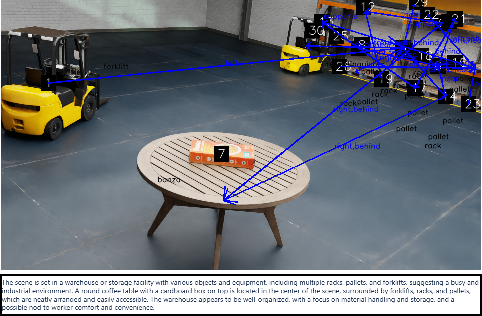
Python API#
IRC 提供了一个 Python API (CaptionAPI)，用于以编程方式配置模型和生成描述：
注意
以下代码片段从 NVIDIA_API_KEY 环境变量中读取模型 API 密钥。请从 NVIDIA NIM API 密钥页面 生成您自己的密钥，并在运行脚本前将其导出（例如，export NVIDIA_API_KEY=<API_KEY>）。
import os
from isaacsim.replicator.caption.core.api import CaptionAPI
def setup_irc_model():
CaptionAPI.set_model_params(
url="https://integrate.api.nvidia.com/v1",
name="deepseek-ai/deepseek-v4-flash-0731",
key=os.environ["NVIDIA_API_KEY"],
max_tokens=16384, # optional; defaults to the model_max_tokens setting (1024)
timeout=60.0, # optional; defaults to the model_timeout setting (30.0)
enable_thinking=False, # optional; defaults to the model_enable_thinking setting (off)
)
# A model can resolve to a real deployment and still refuse every request. Check before a
# long run, otherwise the failure only shows up as null captions in scene_graph_caption.json.
ok, message = CaptionAPI.check_model()
if not ok:
raise RuntimeError(message)
print("IRC model params set successfully.")
setup_irc_model()
设置好模型后，你可以通过编程方式生成字幕：
import asyncio
from isaacsim.replicator.caption.core.api import CaptionAPI
def on_done(future):
captions = future.result()
print(f"Generated captions: {captions}")
task = asyncio.ensure_future(CaptionAPI.get_captions())
task.add_done_callback(on_done)
你还可以在生成字幕之前加载 IRC 配置文件：
from isaacsim.replicator.caption.core.api import CaptionAPI
CaptionAPI.load_config_file("/path/to/irc_config.yaml")
工作流程#
Isaacsim.Replicator.Caption.Core 使用以下工作流来生成字幕：
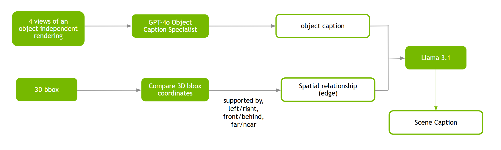
场景图#
场景图是字幕生成的中间输出。它是视觉场景的结构化表示，其中节点代表对象，边表示它们之间的空间关系。它捕捉元素在空间中的排列方式，例如相对位置和方向。例如，在一张人坐在树下长椅上的图像中，图将包含“人”、“长椅”和“树”的节点，以及“坐在……上”和“在……下”等边。这种对空间的关注使得场景图对于需要详细空间推理和场景分析的任务非常有价值。
你可以将场景图与字幕输出一起导出，以便根据你的特定需求灵活且可定制地管理场景图数据。
启用 Isaacsim.Replicator.Caption.Core 扩展#
请按照 Omniverse Extension Manager 指南启用
isaacsim.replicator.caption.core扩展。该扩展在启动时会从 Isaac Sim Assets 获取示例资产。如果遇到资产加载问题，请参阅 Isaac Sim Assets。
如果 UI 加载似乎卡住，请尝试使用标志
--/persistent/isaac/asset_root/timeout=1.0启动 Isaac Sim。
可以通过 Tools > Action and Event Data Generation > VLM Scene Captioning 访问 IRC UI 面板，该面板将在屏幕右侧打开。
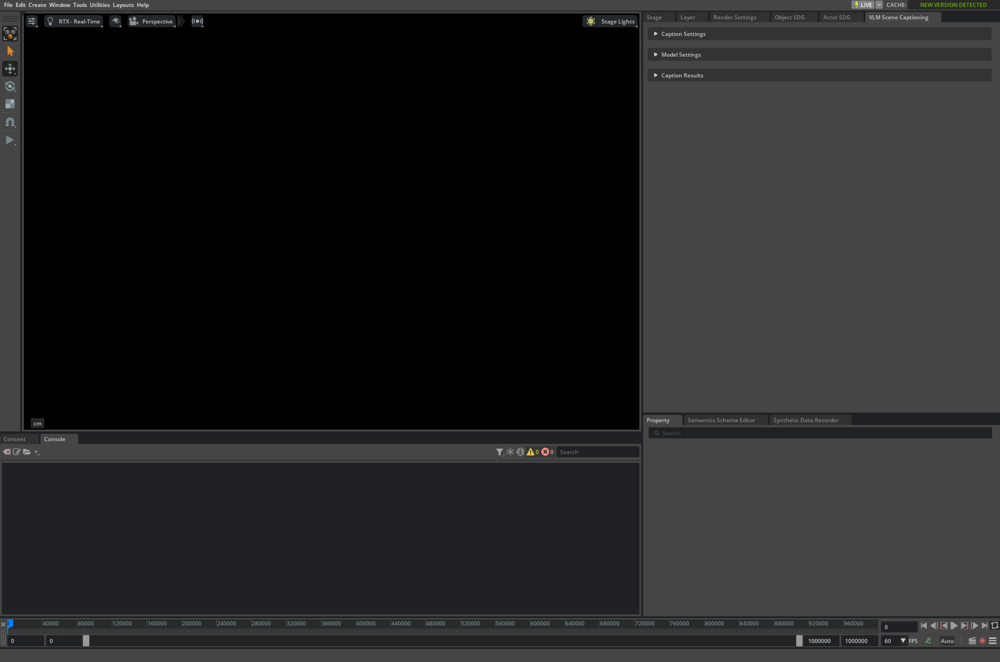
可以通过以下方法调用 IRC：
使用 UI 面板#
要使用 UI 面板启动场景描述生成：
启用后，该扩展将显示在 UI 面板中：
要加载 Stage USD 文件，请打开
Caption Settings面板，然后单击文件选择器图标。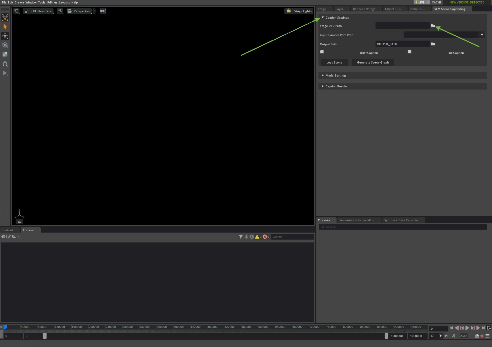
选择要添加字幕的 USD 文件。系统提供了一个用于演示的默认 USD 文件。
注意
我们包含了一个示例 USD。你可以在[Isaac Sim Assets Path]/Samples/Replicator/Captioning/test_caption.usda中找到它。[Isaac Sim Assets Path]是 Isaac Sim Assets 的路径有关如何验证资产访问权限并获取资产路径，请参阅 验证资产访问权限。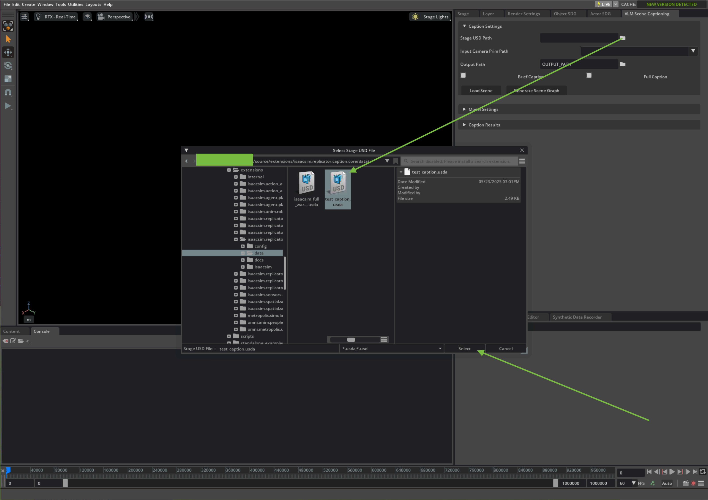
单击 Load Scene 按钮以加载场景。
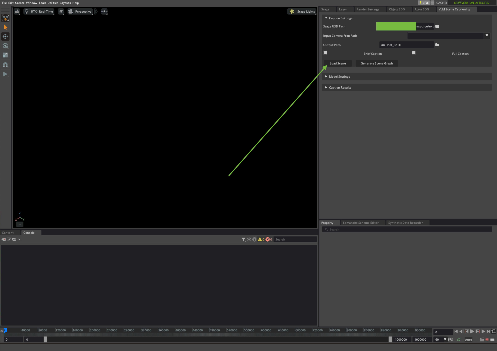
Stage 将在 Stage 视图中加载。如果系统提示启用脚本执行，请单击 Yes。
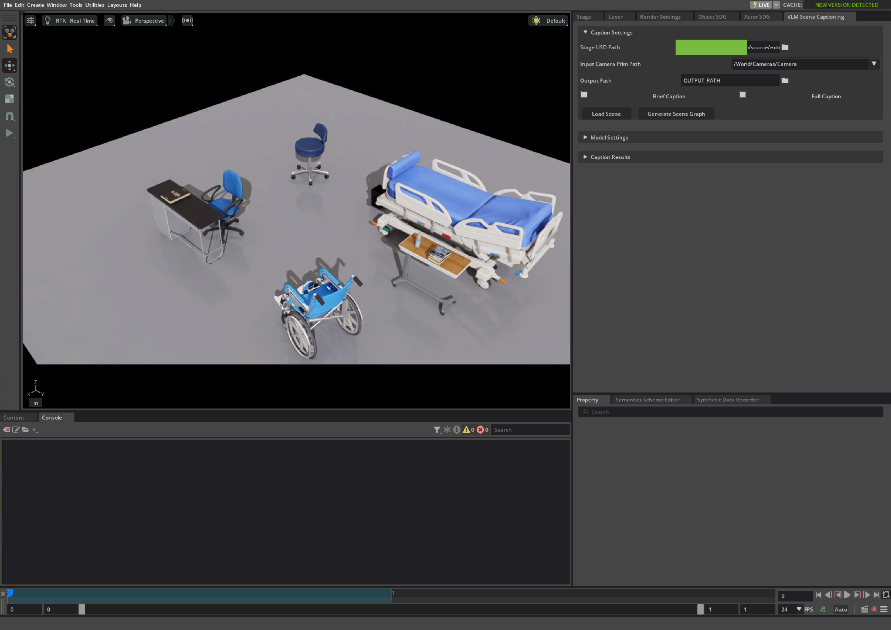
在 Model Settings 面板的 API key 字段中输入 LLM 模型凭据。
该面板还公开了三个请求级设置：
Max Tokens – 单次字幕请求的令牌预算。对于较大的模型，请提高此值；如果预算过小导致响应被截断，则返回的字幕为空。
Timeout (s) – 每个请求的超时时间，单位为秒。
Enable Reasoning – 未选中（默认值）时，禁用模型的推理草稿板。除非模型需要进行推理，否则请保持关闭状态：草稿板与字幕共享令牌预算，因此思考过程可能会在字幕生成之前消耗掉预算。
Note
这三个字段由持久化的 carb 设置支持，而不是此面板的私有值：
/persistent/exts/isaacsim.replicator.caption.core/model_max_tokens # default 1024 /persistent/exts/isaacsim.replicator.caption.core/model_timeout # default 30.0 /persistent/exts/isaacsim.replicator.caption.core/model_enable_thinking # default false
它们被专门添加在该层，以便 IRC 的每个入口点——此面板、
CaptionAPI，以及 IRA 和 IRO 内部使用的SceneGraphWriter/CombinedIROSceneGraphWriter/IROSceneGraphWriter写入器——都能在一个地方共享这些设置。嵌入 IRC 的任何扩展都可以直接读取或编辑这些设置，而无需通过此面板，例如从源头解决模型超时问题：carb.settings.get_settings().set("/persistent/exts/isaacsim.replicator.caption.core/model_timeout", 120.0)， 或在命令行上，--/persistent/exts/isaacsim.replicator.caption.core/model_timeout=120.0。单击 Accept 以应用这些设置，并发送一个单令牌请求，以检查模型是否确实可以被调用。
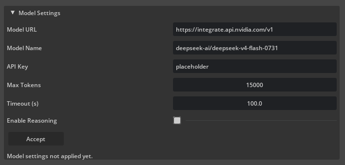
Note
模型可能解析为实际部署，但仍拒绝每个请求。Accept 现在通过三种方式报告检查结果：按钮下方的状态行、视口通知和日志。失败的检查会在屏幕上保留其通知（不会自动消失），因为否则下一次运行的每个字幕都会返回 null 且没有可见的错误。
在 Caption Settings（字幕设置）面板下，输入所需的字幕级别——Brief Caption（简短字幕）用于简短描述，Full Caption（完整字幕）用于更详细的描述。在 Input Camera Prim Path（输入相机 Prim 路径）字段中输入相机 prim 路径，或从相机下拉菜单中选择一个（参见下文步骤 8）。 输入 Output Path（输出路径）以指定保存生成的字幕、相关场景图和元数据的位置。确保输出路径是一个有效的目录。点击 Generate Scene Graph（生成场景图）。
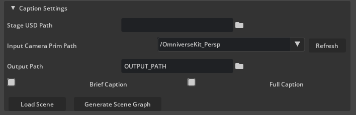
注意
即使 Generate Scene Graph（生成场景图）报告运行已完成，也请检查日志和任何通知：未能生成的字幕会以与 Accept（接受）检查失败相同的方式报告（状态文本加上不会自动消失的通知），而不是在输出文件中静默写入 null。
注意
默认服务 URL 和模型名称是为了方便而提供的。截至 IRC 0.7.13，默认模型为
deepseek-ai/deepseek-v4-flash-0731（Max Tokens 为 1024，Timeout 为 30 秒，Enable Reasoning 关闭）。这些服务由 NVIDIA 托管，并免费试用。 如果与默认模型关联的服务不可达，可以从 NVIDIA NIM API 参考页面 上可用的模型中选择另一个模型。在 Model Settings（模型设置）面板的 Model Name（模型名称）字段中输入模型标识符。也可以获取 NVIDIA NIM 并在本地托管。 访问 NVIDIA 的 NIM 页面 了解更多详情。
场景图、字幕和对应的图像会被生成并保存到输出目录中。
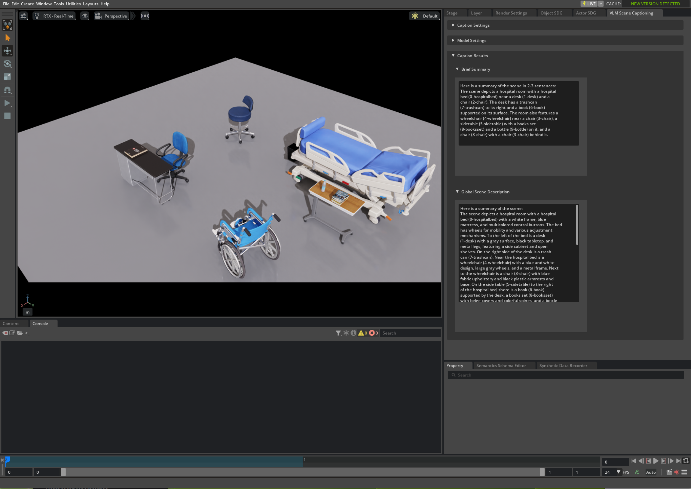
注意
要为感兴趣区域 (ROI) 生成字幕，请从相机下拉菜单中选择所需的相机，如下图所示：
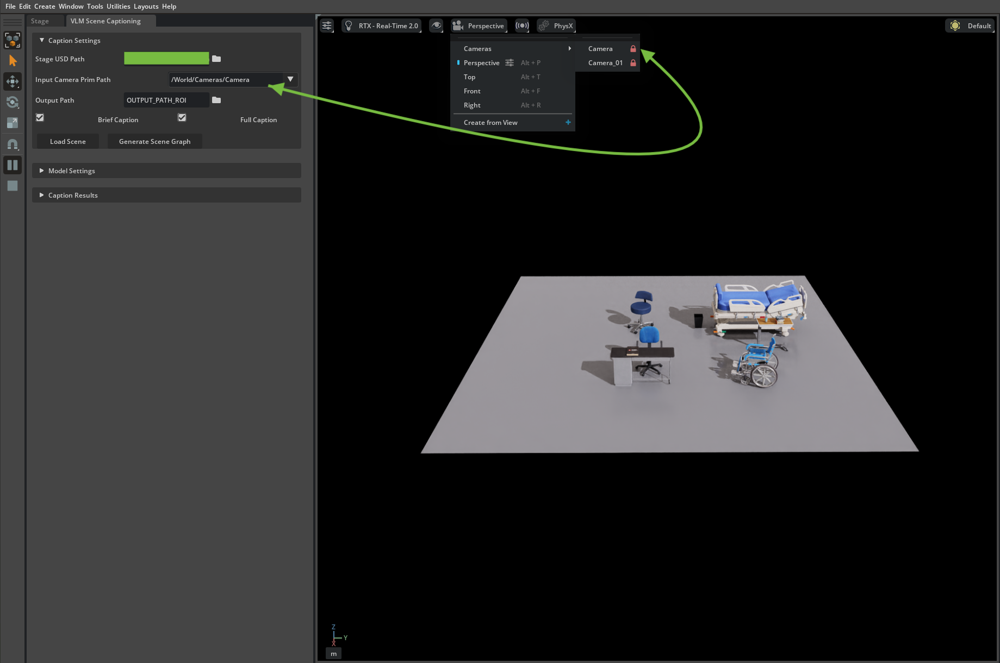
注意
下拉菜单列出了 stage 中任意深度的所有相机 prim，不仅限于
/World/Cameras的直接子级。此外，每当打开 stage、完成资产加载或关闭 stage 时，它都会自动重新填充，而不仅仅是在 Load Scene 之后，因此它能与在此面板之外打开的 stage（例如通过 File > Open）保持同步。点击下拉菜单旁边的 Refresh 可按需重新扫描当前 stage 中的相机；如果当前选定的相机仍然存在，则保留当前选择。将相机放置在所需位置，使 ROI 占据视图平面的主要部分，如下图所示：
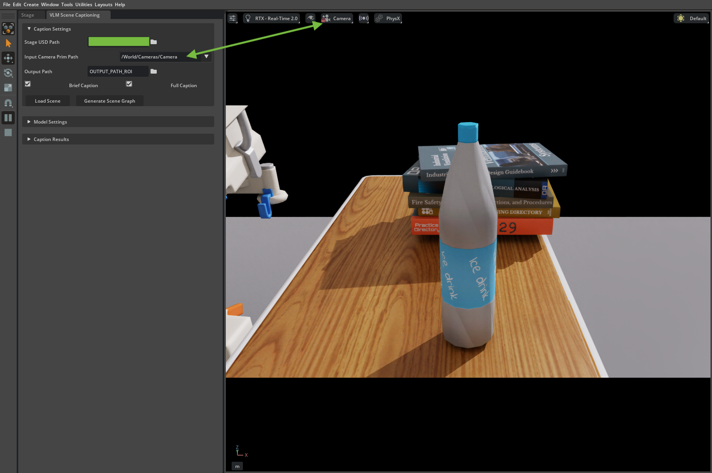
在按照前述步骤选择所需的字幕和输出参数后，点击 Generate Scene Graph 按钮以生成 ROI 的字幕。
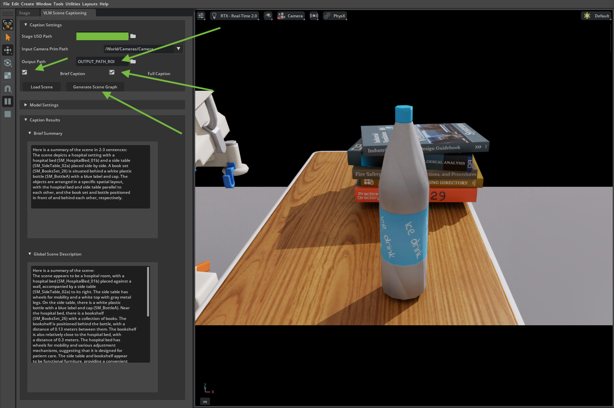
使用 IRA 扩展#
要使用 IRA 启动场景字幕生成，请加载 YAML 配置文件。 或者使用扩展自带的默认配置文件， 并按照以下步骤准备一些环境变量。
本文档解释了用于在 IRO 和 IRA 下运行扩展的 IRC 配置文件的结构。
为扩展准备 NVIDIA NIM API 密钥。
该扩展需要 NVIDIA NIM AI 来生成字幕。 凭据必须存储在环境变量中。
Linux/Mac：
添加到
~/.bashrc或~/.bash_profile：export NVIDIA_API_KEY=<API_KEY>
Windows：
命令提示符：
set NVIDIA_API_KEY=<API_KEY>
注意
NVIDIA NIM API 密钥的有效期有限。免费额度数量有限，可通过与 API 密钥关联的账户访问。额度用尽后，您可以通过开发者门户申请更多额度。有关详细信息，请参阅开发者论坛。
如果您只需要生成场景图而不需要字幕，则不需要 AI 凭据。
示例 Isaacsim.Replicator.Caption.Core 配置文件#
例如，配置文件类似于以下内容：
isaacsim.replicator.caption.core:
version: 0.6.6
camera_prim_path: /World/Cameras/Camera
scene_path: USD_FILE
caption_configs:
save_full_scene_graph: true
save_pruned_scene_graph: true
attach_label_to_usd: false
use_ai_label: false
visualize_caption: true
max_object_capacity: 100
export_edges: true
global_caption: true
qa_caption: false
brief_caption: true
pruning_ratio: 1.0
verbose: true
random_seed: 0
caption_only: false
export_world: true
output_path: OUTPUT_PATH
全局属性#
version
IRC 扩展的版本。如果版本不匹配，扩展将无法工作。
camera_prim_path
场景中相机 prim 的路径。如果未提供，扩展将使用
default_config.yaml 文件中定义的默认相机路径。但是，如果场景中没有相机，扩展将无法工作。
您必须确保场景中有可用的相机。
scene_path
场景 USD 文件的路径。扩展可以从该路径加载场景。但是，如果未提供 scene_path，
扩展将使用应用中已加载的任何场景。如果没有加载任何场景，扩展将无法工作。
output_path
用于保存生成的字幕的输出目录路径。如果未提供，扩展将使用默认输出路径。
字幕配置#
save_full_scene_graph
如果为 True，将在输出目录中保存完整的场景图。
该文件将保存为 <output_path>/<Camera Prim Name>/Captions/full_scene_graph.json。
save_pruned_scene_graph
如果为 True，将在输出目录中保存修剪后的场景图。完整的场景图包含 支撑树中同一层级的任意两个对象之间的边。
该文件将保存为 <output_path>/<Camera Prim Name>/Captions/pruned_scene_graph.json。
注意
支撑树： 一种表示场景中对象之间空间关系的树。 树的根节点是地板（第 0 层）。根节点的直接子节点是地板上的对象，这被视为第 1 层。 第 2 层的对象是由第 1 层的对象支撑的对象，以此类推。
pruning_ratio
场景图的修剪比例。场景图将被修剪为最小生成树（MST）。
修剪比例决定了要保留的 MST 边的百分比。例如，如果 pruning_ratio 设置为 0.5，
则场景图被修剪为保留 50% 的 MST 边。
默认情况下，pruning_ratio 设置为 1.0，这意味着在生成最小生成树（MST）后，场景图不会进一步修剪。
random_seed
用于随机过程的整数。当 pruning_ratio 小于 1.0 时，边将从 MST 中随机移除。随机种子用于控制此过程的随机性。
attach_label_to_usd
如果为 True，它将为场景中所有具有 USD 地址且未预先附加语义标签的 prim 自动附加生成的语义标签。
自动生成的语义标签基于 prim 路径的基本名称。例如，如果 prim 路径为 /World/Objects/Chair，
则语义标签将为 Chair。
附加语义标签后，Omniverse 标注器 能够捕获用于定义标注的 prim。这对于字幕生成任务至关重要，因为未被标注器捕获的 prim 无法包含在场景图中，因此也不会生成字幕。
use_ai_label
如果为 True，它将使用 AI 生成的标签来处理场景中具有语义标签的 prim。AI 生成的标签经过预处理并存储在数据库中，将在运行时从数据库中获取。此功能可与 attach_label_to_usd: true 结合使用，以处理目标 prim 在场景文件中未预先存储语义标签的情况。
visualize_caption
如果为 True，它将在输出图像上可视化场景图。可视化结果将保存为 <output_path>/<Camera Prim Name>/Captions/vis_camera_scene_graph.jpg。
max_object_capacity
场景图可包含的最大对象数量。对象根据其在相机视图中的 2D 边界框大小按逆序选择。
export_edges
如果为 True，场景图的边将被导出到场景图文件中。这些边表示对象之间的空间关系。
export_world
如果为 True，扩展程序将导出场景图中 prim 的 3D World 位置，并将其保存在场景图文件中。3D World 位置是 prim 在世界空间中的 3D 坐标。如果未提及，所有其他位置均位于相机空间中。
global_caption
如果为 True，扩展程序将为场景生成全局描述。全局描述描述了场景的整体内容和上下文。这将保存在输出文件
<output_path>/<Camera Prim Name>/Captions/scene_graph_caption.json
中。
qa_caption
如果为 True，扩展程序将为场景生成 QA 描述。QA 描述是用于测试模型对场景理解能力的问答对。
这将保存在输出文件
<output_path>/<Camera Prim Name>/Captions/scene_graph_caption.json
中。
brief_caption
如果为 True，扩展程序将为场景生成简要描述。简要描述是全局描述的简短版本。这将保存在输出文件
<output_path>/<Camera Prim Name>/Captions/scene_graph_caption.json
中。
verbose
如果为 True，扩展程序将打印场景图生成过程的详细信息，例如 support tree，以及场景图中的节点和边的数量。
caption_only
如果为 True，只有那些对应的 USD 文件中的对象描述已预处理并存储在数据库中的 prim，才会被包含在场景图及后续的生成描述过程中。
在 Isaacsim.Replicator.Agent# 中使用 IRC
Isaacsim.replicator.agent (IRA) 是一个模块，用于在各种 3D 环境中生成关于人类角色和机器人的合成数据。在 IRA 中启用 IRC 扩展后，您可以同时为每一帧生成字幕。
在 IRA 中启用 IRC：
注意
模型 URL、Name、API key、Max Tokens、Timeout 和 Enable Reasoning
不是 SceneGraphWriter 参数 – 这些参数没有针对每个 writer 的覆盖设置。
SceneGraphWriter 在调用模型时不使用覆盖参数，因此它始终从持久化的 isaacsim.replicator.caption.core 扩展设置中读取这些
值。请在启动 IRA 运行之前，通过以下任一方式预先设置一次这些值：
Model Settings 面板 – 其字段直接绑定到这些设置，因此 writer 无需点击 Accept 即可获取值，点击 Accept 仅用于验证模型是否可以被调用。
直接修改底层的 carb 设置：
/persistent/exts/isaacsim.replicator.caption.core/model_url /persistent/exts/isaacsim.replicator.caption.core/model_name /persistent/exts/isaacsim.replicator.caption.core/api_key /persistent/exts/isaacsim.replicator.caption.core/model_max_tokens # default 1024 /persistent/exts/isaacsim.replicator.caption.core/model_timeout # default 30.0 /persistent/exts/isaacsim.replicator.caption.core/model_enable_thinking # default false
例如，在 Python 中：
carb.settings.get_settings().set("/persistent/exts/isaacsim.replicator.caption.core/model_timeout", 60.0)。 或者在启动 Isaac Sim 时通过命令行设置：--/persistent/exts/isaacsim.replicator.caption.core/model_timeout=60.0。
注意
CaptionAPI.set_model_params() 不会影响 SceneGraphWriter：它仅为独立的 CaptionAPI.get_captions() 调用路径
存储值。若要在 IRA 运行中使某个值生效，请使用上述设置。
在 IRA 配置文件中，使用 IRC 的
SceneGraphWriter将字幕写入输出目录。示例：
isaacsim.replicator.agent: version: 1.7.0 simulation_duration: 5 environment: base_stage_asset_path: "Isaac/Samples/Replicator/Captioning/test_caption.usda" sensor: groups: ceiling_cameras: num: 2 aim_at_targets: distance_range: [5, 10] height_range: [7, 10] focal_length_range: [10, 15] look_down_angle_range: [30, 45] character: groups: warehouse_workers: asset_path: "Isaac/People/Characters/" num: 5 routines: - wander: weight: 1 repeat: 1 walk: speed_range: [0.8, 1.5] distance_range: [5.0, 10.0] idle: - animation: idle weight: 1 time_range: [2.0, 5.0] replicator: writers: SceneGraphWriter: semantic_filter_predicate: "class:*" rgb: true camera_params: true object_info_bounding_box_2d_tight: true object_info_bounding_box_2d_loose: true object_info_bounding_box_3d: true pruning_ratio: 1.0 global_caption: true qa_caption: false brief_caption: true visualize_caption: true max_object_capacity: 100 export_edges: true save_full_scene_graph: true save_pruned_scene_graph: true export_world: false attach_label_to_usd: false use_ai_label: false verbose: false random_seed: 0 caption_only: false scene_graph_interval: 10 caption_interval: 10
字幕输出将存储在输出目录中，格式如下：
剪枝后的场景图：
<output_dir>/<Camera Prim Name>/caption_pruned_json/scene_graph_pruned_<frame id>.json完整场景图：
<output_dir>/<Camera Prim Name>/caption_full_json/scene_graph_full_<frame id>.json字幕：
<output_dir>/<Camera Prim Name>/caption/scene_graph_caption_<frame id>.json
以下是
SceneGraphWriter中的其他参数：output_dir
输出目录的路径，生成的字幕以及 IRA 输出将保存在此目录中。 如果未提供，扩展程序将使用默认输出路径。
caption_interval
字幕生成过程的间隔。每
caption_interval帧生成一次字幕。 默认情况下，caption_interval设置为1000。scene_graph_interval
场景图生成过程的间隔。每
scene_graph_interval帧生成一次场景图。 默认情况下，scene_graph_interval设置为1。skip_frames
在开始字幕生成过程之前跳过的帧数。 默认情况下，
skip_frames设置为0。writer_interval
写入进程的间隔。写入器每
writer_interval帧将 IRA 输出写入输出目录。 默认情况下，writer_interval设置为1。export_point_cloud
如果为 True，扩展程序将导出该帧的点云。由于
<output_dir>/<Camera Prim Name>/pointcloud/pointcloud_<frame id>.npy，点云将保存在输出目录中。默认情况下，export_point_cloud设置为 False。export_depth
如果为 True，扩展程序将导出该帧的深度图。深度图将作为
<output_dir>/<Camera Prim Name>/depth/depth_<frame id>.npy保存在输出目录中。默认情况下，export_depth设置为 False。按照 Isaacsim.replicator.agent 教程中的步骤启动数据生成过程。
在 Isaacsim.Replicator.Object 中使用 IRC#
Isaacsim.replicator.object (IRO) 是一个用于组合经过唯一域随机化处理的场景的模块。在 IRC 中启用 IRC 扩展后，您可以同时为每一帧生成字幕。
要在 IRO 中启用 IRC：
注意
模型 URL、Name、API key、Max Tokens、Timeout 和 Enable Reasoning
不是 caption_configs 中的字段 – 它们没有针对每个写入器的覆盖设置。
CombinedIROSceneGraphWriter / IROSceneGraphWriter 调用模型时不带覆盖
参数，因此它们始终从持久化的
isaacsim.replicator.caption.core 扩展设置中读取这些值。请在开始 IRO 运行之前，通过以下任一方式预先设置一次：
Model Settings 面板 – 其字段直接绑定到这些设置，因此 writer 无需点击 Accept 即可获取值，点击 Accept 仅用于验证模型是否可以被调用。
直接修改底层的 carb 设置：
/persistent/exts/isaacsim.replicator.caption.core/model_url /persistent/exts/isaacsim.replicator.caption.core/model_name /persistent/exts/isaacsim.replicator.caption.core/api_key /persistent/exts/isaacsim.replicator.caption.core/model_max_tokens # default 1024 /persistent/exts/isaacsim.replicator.caption.core/model_timeout # default 30.0 /persistent/exts/isaacsim.replicator.caption.core/model_enable_thinking # default false
例如，在 Python 中：
carb.settings.get_settings().set("/persistent/exts/isaacsim.replicator.caption.core/model_timeout", 60.0)。 或者在启动 Isaac Sim 时通过命令行设置：--/persistent/exts/isaacsim.replicator.caption.core/model_timeout=60.0。
注意
CaptionAPI.set_model_params() 不会到达 CombinedIROSceneGraphWriter /
IROSceneGraphWriter：它仅为独立的
CaptionAPI.get_captions() 调用路径存储值。请使用上述设置，以便在 IRO 运行中使该值生效。
在 IRO 配置文件中，使用 IRC 的
CombinedIROSceneGraphWriter将 IRO 输出连同字幕一起写入输出目录。示例：
isaacsim.replicator.object: version: 0.x.y camera_parameters: ... caption_configs: save_full_scene_graph: true save_pruned_scene_graph: true attach_label_to_usd: false use_ai_label: false visualize_caption: true max_object_capacity: 100 export_edges: true caption_only: false global_caption: true qa_caption: true brief_caption: true pruning_ratio: 1.0 verbose: true random_seed: 0 caption_writer: CombinedIROSceneGraphWriter output_switches: caption: True ...
在
caption_configs字段中，配置与 IRC 配置文件相同，但增加了一个caption_writer字段。caption_writer
用于将字幕写入输出目录的写入器。可用的写入器包括：
CombinedIROSceneGraphWriter：此写入器将 IRO 输出与字幕相结合。IROSceneGraphWriter：此写入器仅将字幕写入输出目录，同时抑制其他IRO 输出，例如
labels（2D 检测标签）。但是，它可以生成images、distance_to_image_plane和pointcloud。
字幕输出将按以下方式存储在输出目录中：
剪枝场景图：
<output_dir>/caption/caption_pruned_json/<seed>_<camera_name>.json完整场景图：
<output_dir>/caption/caption_full_json/<seed>_<camera_name>.json可视化场景图：
<output_dir>/caption_rgb/<seed>_<camera_name>.jpg字幕：
<output_dir>/<Camera Prim Name>/caption_dict/<seed>_<camera_name>.json
按照 Isaacsim.replicator.object 教程中的步骤启动数据生成流程。